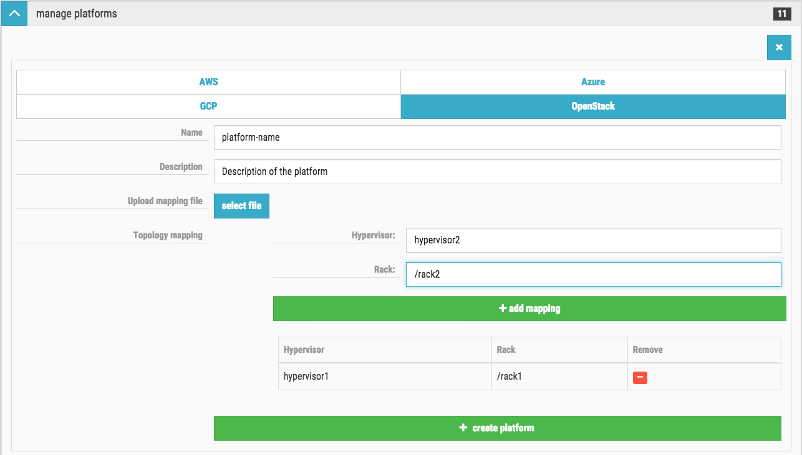

Platforms
This feature is currently
TECHNICAL PREVIEW.
With this feature you can define platform tag that can be attached to Credentials, Networks and Templates. This way you can bundle together different configurations.
Data locality and topologies
The OpenStack documentation about data locality:
It is extremely important for data processing to do locally (on the same rack, OpenStack compute node or even VM) as much work as possible. Hadoop supports data-locality feature and can schedule jobs to tasktracker nodes that are local for input stream. In this case tasktracker could communicate directly with local data node.
OpenStack Topology Mapping
Topology mapping can be attached to the Platform definition, that associates the hypervisors with racks. You can set the mapping on the Cloudbreak Web UI by defining this line by line or uploading in a file.
The mapping file should have the following format:
hypervisor1 /rack1
hypervisor2 /rack2
hypervisor3 /rack2
Based on this mapping the Cloudbreak application could ensure that the rack information of the started VMs will be passed to Hadoop services via Ambari.
Managing Platforms
Cloudbreak UI
You can log into the Cloudbreak application at http://PUBLIC_IP:3000. You can find the provider specific documentations here:
You can find the manage platforms expandable section on the Cloudbreak Dashboard. With the help of create
platform button you can open the platform creation form. Platform name is the only one
required parameter.

OpenStack Topology Mapping is optional on the manage platforms.

Cloudbreak Shell
Start the shell with
cbd util cloudbreak-shellon a console. This will launch the Cloudbreak shell inside a Docker container and you are ready to start using it. You can find more details at the Cloudbreak Shell page.
# Creating a Platform
platform create --AWS --name platform-name --description 'description of the platform'
# Creating OpenStack Platform with topology mapping
platform create --OPENSTACK --name platform-name --description 'openstack platform' --file file_path
platform create --OPENSTACK --name platform-name --description 'openstack platform' --url url_to_file
Credential, Network and Template Creation
Credential, Network and Template creation forms and the related shell commands have option to set a platform for the resource.
Cloudbreak UI
Example network resource creation an the UI with the option of selecting a Platform:

Cloudbreak Shell
# Example shell command to create Network resource with a connected Platform
network create --AWS --name aws-network --subnet 10.10.10.0/24 --description 'example network' --platformId 26
Cluster Creation on UI
If platform has assigned to the selected credential, then only the associated networks and templates can be selected during cluster creation.
Edit on GitHub